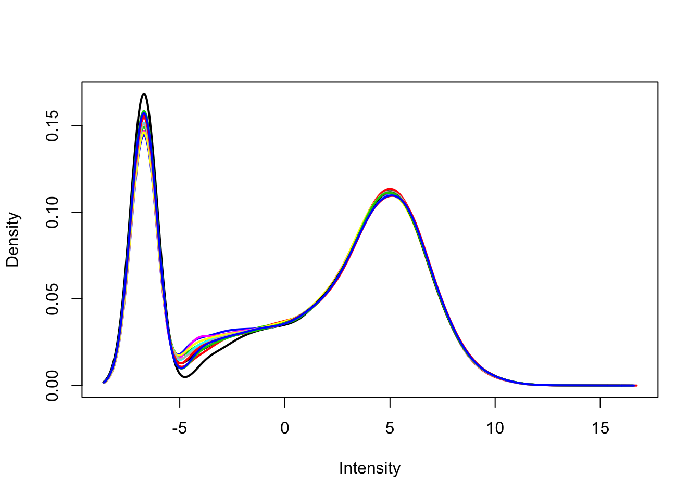
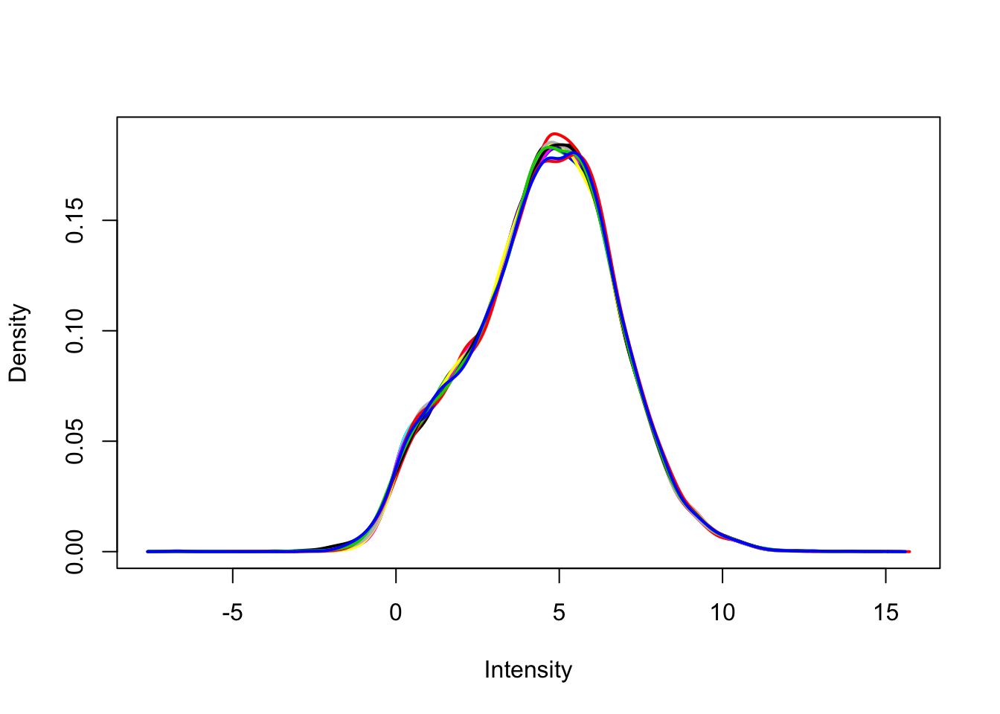
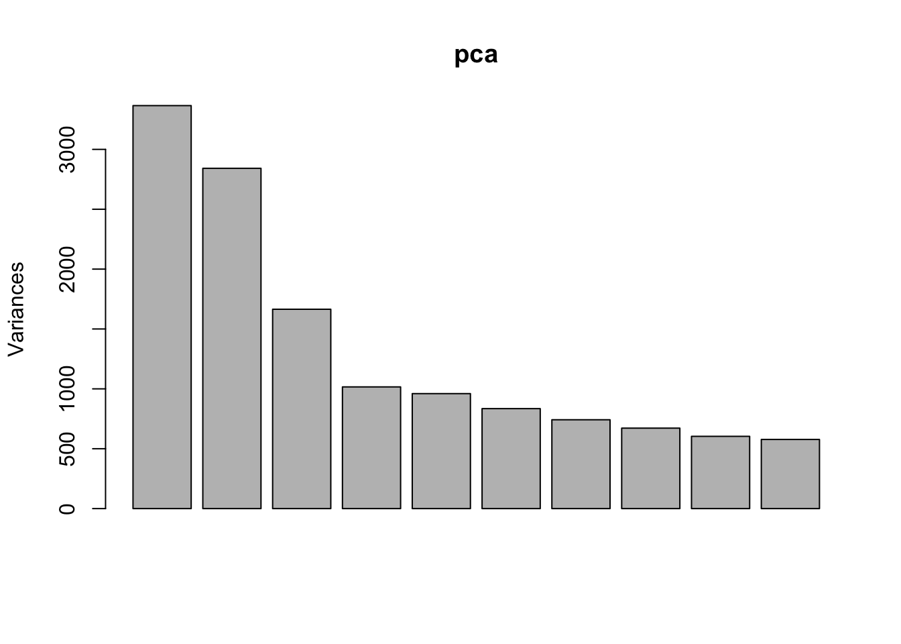
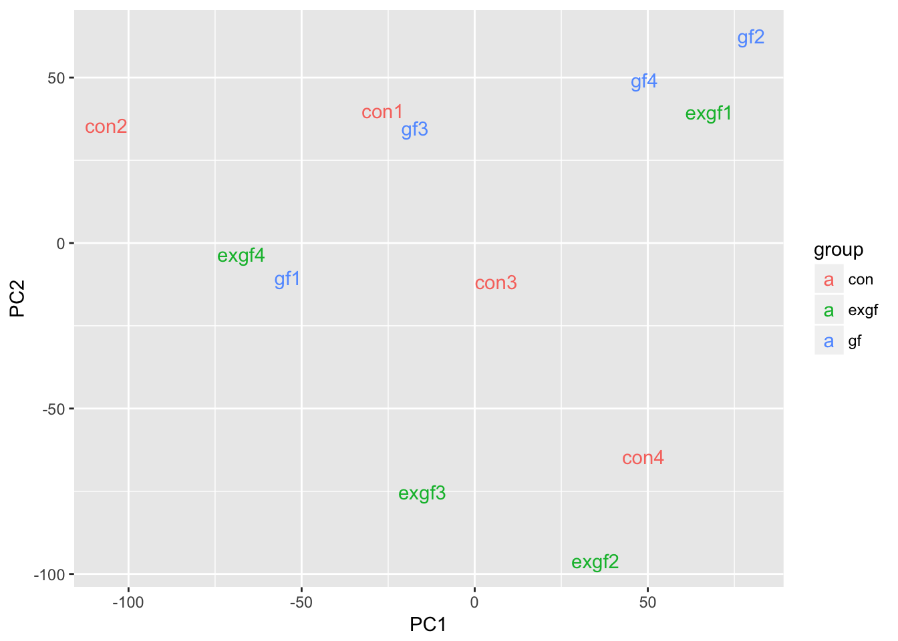
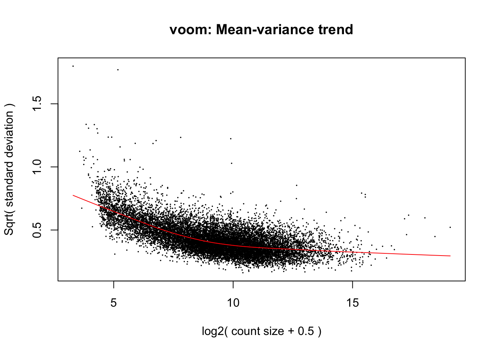
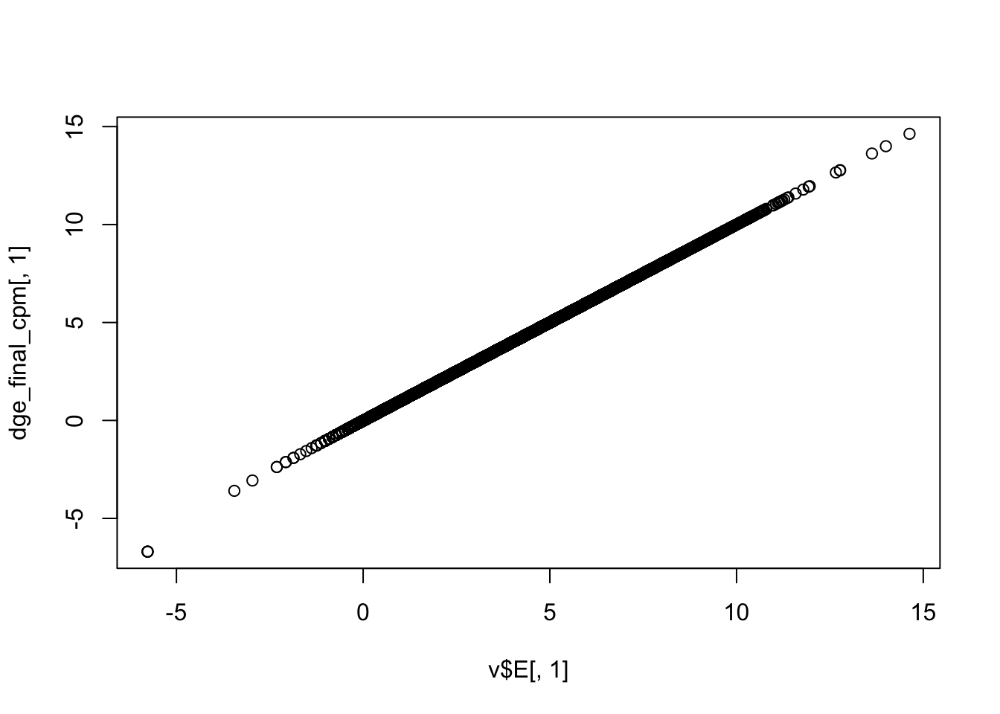
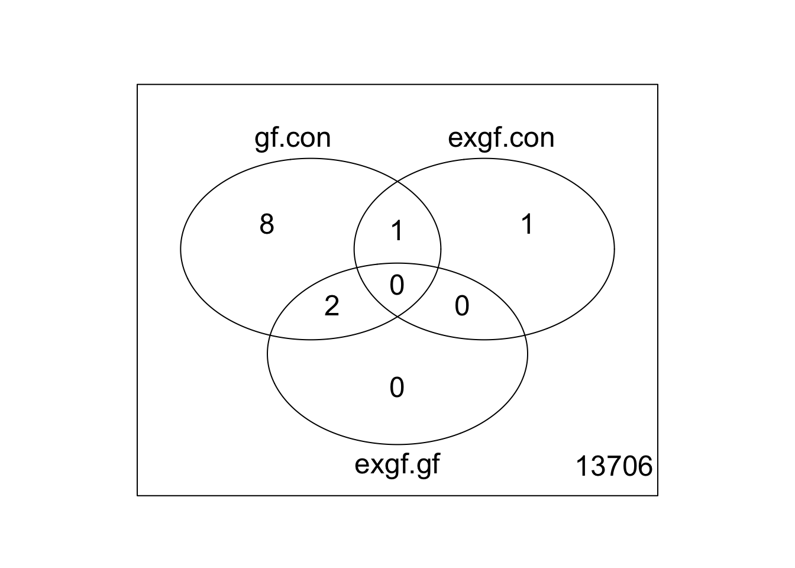

Differential expression analysis for studies with more than 2 groups
John Blischak
Last updated: 2018-05-23
workflowr checks: (Click a bullet for more information)-
✖ R Markdown file: uncommitted changes
The R Markdown file has unstaged changes. To know which version of the R Markdown file created these results, you’ll want to first commit it to the Git repo. If you’re still working on the analysis, you can ignore this warning. When you’re finished, you can runwflow_publishto commit the R Markdown file and build the HTML. -
✔ Environment: empty
Great job! The global environment was empty. Objects defined in the global environment can affect the analysis in your R Markdown file in unknown ways. For reproduciblity it’s best to always run the code in an empty environment.
-
✔ Seed:
set.seed(12345)The command
set.seed(12345)was run prior to running the code in the R Markdown file. Setting a seed ensures that any results that rely on randomness, e.g. subsampling or permutations, are reproducible. -
✔ Session information: recorded
Great job! Recording the operating system, R version, and package versions is critical for reproducibility.
-
Great! You are using Git for version control. Tracking code development and connecting the code version to the results is critical for reproducibility. The version displayed above was the version of the Git repository at the time these results were generated.✔ Repository version: cc6353a
Note that you need to be careful to ensure that all relevant files for the analysis have been committed to Git prior to generating the results (you can usewflow_publishorwflow_git_commit). workflowr only checks the R Markdown file, but you know if there are other scripts or data files that it depends on. Below is the status of the Git repository when the results were generated:
Note that any generated files, e.g. HTML, png, CSS, etc., are not included in this status report because it is ok for generated content to have uncommitted changes.Ignored files: Ignored: .DS_Store Ignored: .Rhistory Ignored: .Rproj.user/ Ignored: figure/.DS_Store Ignored: figure/ch02/.DS_Store Untracked files: Untracked: _workflowr.yml Unstaged changes: Modified: analysis/_site.yml Modified: analysis/about.Rmd Modified: analysis/ch01.Rmd Modified: analysis/ch02.Rmd Modified: analysis/ch03.Rmd Modified: analysis/ch04.Rmd Deleted: analysis/chunks.R Modified: analysis/index.Rmd Modified: analysis/license.Rmd
Expand here to see past versions:
Analyze RNA-seq data from Hoban et al., 2016, which measured gene expression in the prefrontal cortex of 3 groups of mice: conventional (con), germ-free (gf), and germ-free colonized with normal microbiota (exgf).
library("Biobase")
library("edgeR")
library("ggplot2")
library("limma")
library("stringr")
dge <- readRDS("../data/ch03.rds")Studies with more than 2 groups (Video)
Describe the scientific question, the experimental design, and the data collected for the 3-group study. Review RNA-seq technique and the need to standardize by library size.
Calculate the library size
Use colSums to calculate the library sizes and run summary to appreciate the variability.
lib_size <- colSums(dge$counts)
summary(lib_size) Min. 1st Qu. Median Mean 3rd Qu. Max.
14710000 24330000 26530000 26030000 29460000 33080000 Calculate counts per million
Use edgeR::calcNormFactors and edgeR::cpm to calculate TMM-normalized counts per million.
dge <- calcNormFactors(dge)
dge_cpm <- cpm(dge, log = TRUE)Create density plots of counts versus counts per million
Use limma::plotDensities to visualize the distribution of counts and the distribution of counts per million.
plotDensities(dge_cpm, legend = FALSE)
Expand here to see past versions of unnamed-chunk-3-1.png:
| Version | Author | Date |
|---|---|---|
| 77a43dd | John Blischak | 2018-01-12 |
Filtering genes and samples (Video)
Describe the process of filtering lowly expressed genes (show density plots from previous exercise to demonstrate bimodal distribution) and identifying outlier samples with PCA. Discuss the nuances of removing outlier samples.
Remove lowly expressed genes
Remove any gene that does not have at least a log2 cpm > 0 in at least 4 samples (n = 4 per group). Use limma::plotDensities to confirm the distribution of counts per million is unimodal post-filtering.
dge_filt <- dge[rowSums(dge_cpm > 0) >= 4, ]
dge_filt <- calcNormFactors(dge_filt)
dge_filt_cpm <- cpm(dge_filt, log = TRUE)
plotDensities(dge_filt_cpm, legend = FALSE)
Expand here to see past versions of unnamed-chunk-4-1.png:
| Version | Author | Date |
|---|---|---|
| 77a43dd | John Blischak | 2018-01-12 |
Use PCA to identify outlier sample
Use prcomp to calculate PCA and then plot PC1 vs. PC2. Remove the exgf sample that clusters with the gf samples.
pca <- prcomp(t(dge_filt_cpm), scale. = TRUE)
plot(pca)
Expand here to see past versions of unnamed-chunk-5-1.png:
| Version | Author | Date |
|---|---|---|
| 77a43dd | John Blischak | 2018-01-12 |
d <- data.frame(dge_filt$samples, pca$x)
ggplot(d, aes(x = PC1, y = PC2, color = group)) +
geom_text(aes(label = id))
Expand here to see past versions of unnamed-chunk-5-2.png:
| Version | Author | Date |
|---|---|---|
| 77a43dd | John Blischak | 2018-01-12 |
plotMDS(dge_filt)
Expand here to see past versions of unnamed-chunk-5-3.png:
| Version | Author | Date |
|---|---|---|
| 77a43dd | John Blischak | 2018-01-12 |
dge_final <- dge_filt[, dge_filt$samples$id != "exgf1"]Differential expression for RNA-seq with voom (Video)
Review how to use model.matrix and limma::makeContrasts. Describe how limma::voom corrects for the mean-variance relationship of the count data.
Create design matrix for study with 3 groups
Use model.matrix to create a linear model with three binary variables (group-means parametrization).
design <- model.matrix(~0 + group, data = dge_final$samples)
colnames(design) <- str_replace(colnames(design), "group", "")
colSums(design) con exgf gf
4 3 4 Create contrasts matrix for study with 3 groups
Use limma::makeContrasts to test all pairwise comparisions.
cont_mat <- makeContrasts(gf.con = gf - con,
exgf.con = exgf - con,
exgf.gf = exgf - gf,
levels = design)
cont_mat Contrasts
Levels gf.con exgf.con exgf.gf
con -1 -1 0
exgf 0 1 1
gf 1 0 -1Account for mean-variance relationship with voom
Use limma::voom to calculate weights for the linear model to account for the mean-variance relationship of the counts. Set plot = TRUE to visualize the mean-variance trend. Explore the EList object returned to confirm that the expression values in E are simply the counts per million.
dge_final <- calcNormFactors(dge_final)
v <- voom(dge_final, design, plot = TRUE)
Expand here to see past versions of unnamed-chunk-8-1.png:
| Version | Author | Date |
|---|---|---|
| 77a43dd | John Blischak | 2018-01-12 |
plotDensities(v$E, legend = FALSE)
Expand here to see past versions of unnamed-chunk-8-2.png:
| Version | Author | Date |
|---|---|---|
| 77a43dd | John Blischak | 2018-01-12 |
dge_final_cpm <- cpm(dge_final, log = TRUE)
plot(v$E[, 1], dge_final_cpm[, 1])
Expand here to see past versions of unnamed-chunk-8-3.png:
| Version | Author | Date |
|---|---|---|
| 77a43dd | John Blischak | 2018-01-12 |
Fit and test model for study with 3 groups
Use limma::lmFit, limma::contrasts.fit, limma::eBayes, and limma::decideTests to fit and test the model. Use limma::vennDiagram to visualize overlap of differentially expressed genes.
fit <- lmFit(v, design)
fit2 <- contrasts.fit(fit, contrasts = cont_mat)
fit2 <- eBayes(fit2)
results <- decideTests(fit2)
vennDiagram(results)
Expand here to see past versions of unnamed-chunk-9-1.png:
| Version | Author | Date |
|---|---|---|
| 77a43dd | John Blischak | 2018-01-12 |
Session information
sessionInfo()R version 3.3.3 (2017-03-06)
Platform: x86_64-apple-darwin13.4.0 (64-bit)
Running under: OS X Yosemite 10.10.5
locale:
[1] en_US.UTF-8/en_US.UTF-8/en_US.UTF-8/C/en_US.UTF-8/en_US.UTF-8
attached base packages:
[1] parallel stats graphics grDevices utils datasets methods
[8] base
other attached packages:
[1] stringr_1.3.0 ggplot2_2.2.1 edgeR_3.16.5
[4] limma_3.30.13 Biobase_2.34.0 BiocGenerics_0.20.0
loaded via a namespace (and not attached):
[1] Rcpp_0.12.14 knitr_1.20 whisker_0.3-2
[4] magrittr_1.5 workflowr_1.0.1 munsell_0.4.3
[7] colorspace_1.3-2 lattice_0.20-35 rlang_0.2.0
[10] plyr_1.8.4 tools_3.3.3 grid_3.3.3
[13] gtable_0.2.0 R.oo_1.22.0 git2r_0.21.0
[16] htmltools_0.3.6 lazyeval_0.2.1 yaml_2.1.16
[19] rprojroot_1.3-2 digest_0.6.13 tibble_1.4.2
[22] R.utils_2.6.0 evaluate_0.10.1 rmarkdown_1.9.12
[25] labeling_0.3 stringi_1.1.7 pillar_1.2.2
[28] scales_0.5.0 backports_1.1.2 R.methodsS3_1.7.1
[31] locfit_1.5-9.1
This reproducible R Markdown analysis was created with workflowr 1.0.1